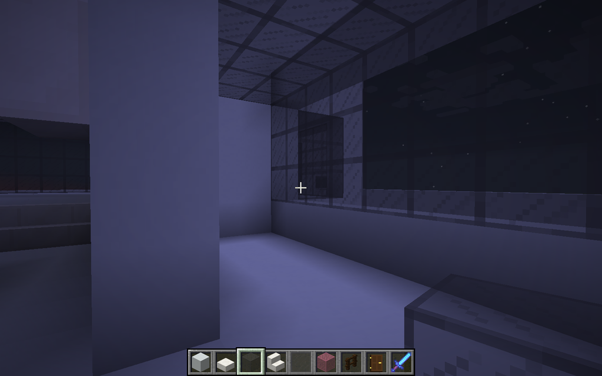

This is where you will learn how to build a Minecraft Modern house.
The Outline: The outline will be 48 blocks high and 42 blocks wide. Trace it first by digging 1 block into the ground and then build it to be 1 block tall. This will be built out of White Terracotta.
The Wall: the wall will be 4 blocks, high, 1 block inside the outline and on the ground. If you look at it it should look like it is 3 blocks above the outline. Only do this for the sides and the back, the front will look different. This will be built out of White Terracotta.
The Front Gate: follow the pictures, the glass pane is gray, and the iron bars are six blocks in length, the next white terracotta pillar being the 7th block.
The Entryway: Make stairs like in the picture, filling in the space beneath the stairs. The stairs are quarts and the blocks are just white terracotta. The stairs are facing the doorway, going up.
The House Outline: Make the outline 2 blocks up, then fill it in, and make 1 layer up on the Northwest side.
The Garage: Use white terracotta to make a line the same height as the wall of the house, make the line by the right side of the iron bars-not on the left- ending 2 blocks before the back of the house. Then, build up the walls 3 blocks, and add a roof. Then, add smooth stone slab as in the picture, and add two dark oak doors leading to the house interior.
The Infinity Pool: Where the garage comes into, build a lounge according to the picture. Then, at the top, fill the pool with water as in the picture.
The hallway and the front garden: Make the hallway according to the pictures so that the windows are the walls but the outline and the roof are white terracotta. Then, after that, make a corner on both sides by placing the blocks one pillar behind the outline and one to the right of it. Place the grass blocks to the right of the hallway, in the ground, like the picture.
Stairs to heaven: Make a staircase like on the picture. The stairs are quartz and the blocks are white terracotta. The final picture is what you build around the staircase, to bottom set being the gray stained glass blocks and white terracotta rim with a white terracotta roof, and the top being covered with white terracotta blocks and quartz slabs, in a staircase form, so that the bottom is on the edge of the platform, and it is going up to the opposite direction.
The Kitchen and Second Room: Make the Kitchen like a bar, then make a wall for the second room, and make it from white terracotta. This goes across from the garage doors, and the second room is next to the garage doors. 
The living room: The platform is 1 block up, with stairs leading up. Some of the roof is glass, and make the windows big,like the picture.
The upper hallway: The Glowstone is for light, don't build the rooms behind the doors yet.
The room by the infinity pool: Make it just like on the picture.
The Bathroom: Make a shower and the door like this.
Small Room: make it like this, you can use other colors.